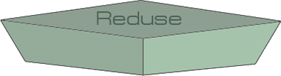

- 


Reducing is the best way to go about managing solid waste. By just doing a few things on individual level can make an impact. For instance: you can buy products with less packaging; buy products in bulk; try to stay away from disposable goods (in particular, paper plates, cups, plastic utensils); buy durable goods.
The other best option is to reuse items as many times as it is possible. For instance, bring cloth sacks to the store with you instead of taking home new plastic bags every day. You can use these sacks again and again. Moreover, you can use containers, coffee cans, shoe boxes, margarine/glass containers, toys, furniture, etc in a creative way. A quick internet search can open a world of ideas of DIY crafts.
Many of the things we use every day, like paper bags, plastic bags, soda cans, milk cartons, are made out of materials that can be recycled. Recycled items are put through a process that makes it possible to create new products out of the materials from the old ones. For this time, municipal garbage do not have recycling option. What people can do is, sort the recyclable materials and take them with local recycling facilities. Check out coop.ge’s website.
Energy recovery form waste is the conversion of non-recyclable waste materials into useable heat, electricity, or fuel through a variety of processes, including combustion, gasification, anaerobic digestion, landfill gas recovery. This process is often called waste-to-energy. Currently, there are no facilities for energy recovery in Georgia.